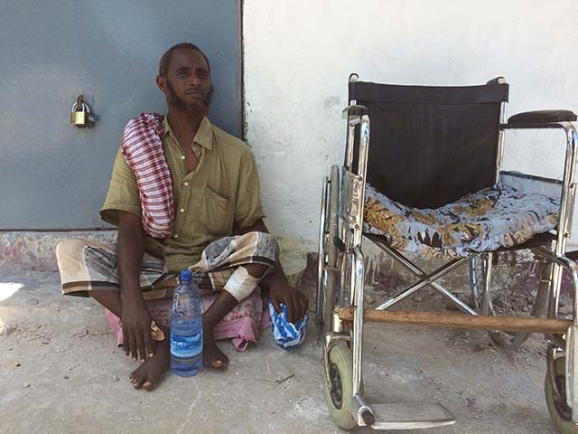
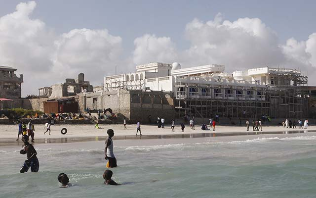

Telecom use has surged in Somalia, especially with mobile phones and other digital devices. That’s apparent in the capital city of Mogadishu. (Photos by Tobin Jones for VOA)
Voice of America
Navigating Somalia’s rocky digital shoals
MOGADISHU, Somalia – Within minutes of waking each morning, logistics specialist Yahya Omar reaches for his smartphone to check for business assignments, news, sports scores and messages from his brothers in the United States. “It just updates me on what’s happened — internationally, locally,” the 26-year-old says of his phone.
In this capital city striving to recover from a quarter-century of conflict and continuing bursts of extremist violence, social media “can literally save your life,” says Omar, who returned here to his birthplace several years ago.
Twitter and Whatsapp carry breaking news that steers him from places where, for instance, Islamist insurgents or other armed groups are active.
“The internet basically means day-to-day life. Without the internet, I probably would have had to go back” to Minnesota from Mogadishu, says Omar, who left Somalia as a young boy and came back in early 2013. “I wouldn’t be as comfortable as I am now.”
Access truly is a lifeline for Omar. He’s among the few but growing ranks of Somalis using mobile phones, computers and other devices to navigate dangers — and, far more often, to conduct work and play, manage money and relationships, arrange schedules and link to the broader world.
Telecom surge
Telecommunications usage in the Horn of Africa nation, as elsewhere in the African continent, has surged in the last few years. Cellphone subscriptions rocketed from 648,200 in 2010 to over 5.8 million in 2015, according to the International Telecommunication Union (ITU), a special U.N. agency. It says roughly half of the estimated 11 million Somalis have mobile plans. Some carry multiple phones to compensate for service gaps; others share a single device.
The telecom sector represents “one of the brightest spots in Somalia’s economy,” according to a 2015 World Bank blog post.
But its glow concentrates on people like Omar on the rarefied side of the digital divide. The ITU says not quite 2 percent of Somalis have internet accounts. Theirs is among the world’s poorest countries, with per capita income estimated at $435 — less than $1.20 a day, the World Bank says. At least half live in poverty. Most have more urgent needs than internet service costing up to $50 a month. In the largely illiterate society, dependent on livestock and fishing, radio is the main news source. Internet cafes are hard to find outside major cities.
Nor can Somalis find much free access: Most libraries closed when civil war broke out in 1991 and the government collapsed.
Since then, the country has suffered clan warfare, cyclical famines, poverty, piracy and Islamist terrorist groups such as al-Shabab. Millions fled their homes, within and across the country’s borders. The 2007 entry of African Union peacekeeping troops and the 2012 formation of a Western-backed federal government restored some equilibrium. But it’s a fragile state, with at least a million Somalis still internally displaced, a recent presidential election that was repeatedly delayed by political infighting, and peacekeepers scheduled to begin withdrawing in 2018.
Video blogger and photographer Mukhtar Nuur captures a scene of young Somalis boating just off Mogadishu’s Lido Beach. Nuur shares his work on Facebook, YouTube and Twitter.
In Somalia, “most of the young people have known only conflict and hardship,” the United Nations has reported(PDF), noting that, as of 2014, three out of four Somalis were 30 or younger and almost half were under age 15. The mostly Sunni Muslim nation has a fertility rate of 6.4 births per woman — fourth highest in the world — compared with a U.S. rate of 1.8.
Advantages accrue to the few
The young who are formally educated — like Omar, who has a college degree in business administration — are most likely to have smartphones that connect them with opportunities, the Pew Research Center said in a 2015 report on mobile communication in Africa. But most young Somalis can’t afford such services. Two-thirds of those ages 15 to 29 are unemployed, according to the U.N. Development Program’s most recent data.
Omar depends on internet service to do his job, facilitate his logistics work, “connecting with people [who] are abroad, especially for inventory or making orders.” He and his wife pay $50 a month for service that’s “kinda slow,” he complains. “ … I’m a heavy data user. I have to get connected to the world.”
Like several other people interviewed for this report, Omar has asked that his surname and some other identifying details be withheld for his safety. In such cases, VOA notes the requests for anonymity. Many Somalis are tight-lipped, mistrustful of the government and wary of non-state armed actors.
Omar weighs security risks against “a whole cost of living that’s much cheaper” in Somalia, he says. The balance, at least for now, is in his homeland’s favor.
Moallim Abdi Ali typically begs on one of Mogadishu’s busiest streets, using a mobile phone to accept money transfers that supplement the Somali shillings and U.S. dollars he collects. (VOA photo)
Managing money via mobile phones
Although internet lies beyond the grasp of many Somalis, even the poor can get their hands on basic mobile phones.
Moallim Abdi Ali, a beggar, uses an old Nokia phone to accept money transfers that supplement the cash he collects on Mogadishu’s streets.
Some passers-by donate Somali shillings or U.S. dollars, but “others send the money through the mobile service,” Abdi explains. He depends on the contributions, saying he lost the use of his legs as a toddler and suffered a chest injury in June when al-Shabab militants bombed the Ambassador Hotel. He was begging outside.
Mobile banking is widespread in Somalia, introduced by the country’s biggest telecom companies in 2010 after the traditional banking system faltered. It’s the conduit for remittances that buoy the economy and sustain many households. Relatives and friends in the Somali diaspora in 2015 sent an estimated $1.4 billion, almost a quarter of the country’s gross domestic product.
When Omar was living in Minnesota, he sometimes sent money to a family friend in Mogadishu – “$50, $100, whatever I scraped together.”
“I did not know the impact [remittances] had,” Omar says now. “I did not know it was basically life or death for some people who have no other forms” of support.
A Somali man checks his phone while at the beach in Mogadishu. The rebel group al-Shabab tried to ban smartphones in Somalia, including among its members, fearing they could be tracked via GPS or informed upon by spies. (Reuters)
Unreliable and unregulated phones
Mobile phone service is pervasive and cheap, but it’s unstable and, like the internet, compromised by lack of government regulation and threats from al-Shabab.
“There are no regulations or taxes, and no service obligations,” the Australia-based telecom research firm BuddeComm reported in August. It noted that lack of government oversight has “led to problems with frequency spectrum coordination,” so local phone networks don’t always connect and calls can get dropped.
A communications bill in the Somali parliament would set service requirements and levy taxes, but it is stalled. Telecom firms have resisted regulation, says Tim Kelly, a World Bank policy specialist on information and communications technology. He says his organization estimated such firms “should be paying at least $18 million a year in taxes, given their revenue.”
Instead, the firms make much smaller “voluntary” payments to the federal treasury “to make sure no real action is taken,” Kelly says.
The deputy director of Somalia's National Intelligence and Security Agency says he’s unaware of internet providers attempting to block regulation by making payments. “I don’t know that. I haven’t heard that,” Ismael Osman told VOA during a September interview in Mogadishu.
“I have the opportunity to really change something here. ... I almost feel dedicated to at least bettering the country and doing something for the people here.”
Yahya Omar
logistics specialist

Even in the bustling capital of Somalia, a largely agrarian nation, people rely on a combination of old and new technology. (Photo by Tobin Jones for VOA)
Militants targeted mobile service
Another obstacle to good service: Al-Shabab’s war on technology. The al-Qaida-linked group in 2013 issued a ban on smartphones – including for most of its militants – fearing such phones could be used to track their movements through GPS or used by informants spying on them.
Al-Shabab terrorists, who have often attacked satellite towers, in early 2014 ordered Somali telecom companies to shut down 3G mobile internet service or face punishment. The companies complied. Though Mogadishu got its first underground fiber-optic cables later that year, ushering in high-speed connections and reducing damage risks by terrorists, al-Shabab still poses a threat. Internet access is markedly better in the calmer northwestern region of Somaliland and the autonomous northeastern region of Puntland.
The Somali government itself has thrown up barriers to access. Citing “criminal acts,” federal authorities shuttered more than 30 independent websites that had criticized the government, the Mogadishu-based Suna Times reported last year.
“The government actively engages in censorship and prosecution of critical voices, while those who commit crimes against journalists enjoy impunity,” the Washington-based watchdog group Freedom House reported in 2016.
Skeletal communications towers and shipping cranes reach skyward in Mogadishu, Somalia’s coastal capital. (VOA)
Little outside information
Another vulnerability lingers from the conflict years, when political instability disrupted communications and public education, the World Bank's Kelly says. Despite some state-run TV and popular radio stations, the country still is "relatively cut off from the rest of the world in information," leaving many young people in a bubble.
"Young Somalis growing up haven't been very well integrated into the wider world," he says. "... One of the consequences [is] it's relatively easy for them to be brainwashed by propaganda."
Militant groups control at least a handful of websites and radio stations, such as Radio Andalus, al-Shabab’s official mouthpiece.
“The forces of Shabab do make use of social media, and they’re very good at that,” Abdi Barud, executive director of Global Somali Diaspora in London, told VOA. “That’s how they connect with young people in the diaspora” for recruitment.
"The bad guys are everywhere," says intelligence official Osman, adding that his agency monitors militants via internet, mobile phones and social media. “We trace and track them, and we capture them most of the time.”
Fanning hopes and fears
The internet itself can amplify or offset extremists’ threats — and too often does the former, constraining hope for Somalia’s recovery, says Deeq Mohamed. The diaspora returnee runs the Fursad Fund, a nonprofit supporting Somali civic and economic development.
“The danger is real, but the fear is far greater,” and more destructive, Mohamed says. “The internet plays a huge role in perpetuating this greater fear. Explosions are not unique to Somalia.”
Young people play at the beach in Mogadishu. (VOA)
Decades ago, Mogadishu was considered a vacation haven, the “pearl of the Indian Ocean.” Omar imagines that reputation restored: “If this place was stable, if this place was secure, it would easily be a tourist attraction globally.”
He says he's often told, especially after a dangerous event occurs, "You should come back. You shouldn’t really be there.”
But Omar strongly disagrees. Aided by connectivity, “I have the opportunity to really change something here. ... I almost feel dedicated to at least bettering the country and doing something for the people here.”
VOA Somali service’s Abdulaziz H. Osman reported from Mogadishu, with Carol Guensburg reporting from Washington, D.C.
In the midst of war-torn Mogadishu, young Somali men and women have taken to their mobile phones to engage and connect with one another on social media.


VOA Story credits
Writers-reporters: Carol Guensburg, Abdulaziz H. Osman
Editors: Mark Young, Tom Detzel, Rick Shacklett
Design and development: Brian Williamson
Project management: Clara Dominguez, John Featherly and Steven Ferri
About the project
This project explores internet freedom and how its availability, or restrictions, affect individuals. It’s a joint initiative by Radio Free Europe/Radio Liberty, Middle East Broadcasting Networks, Voice of America, Radio Free Asia and the Office of Cuba Broadcasting. They’re overseen by the Broadcasting Board of Governors.